Rediseño del sitio web del Fondo de Cultura Económica en Colombia
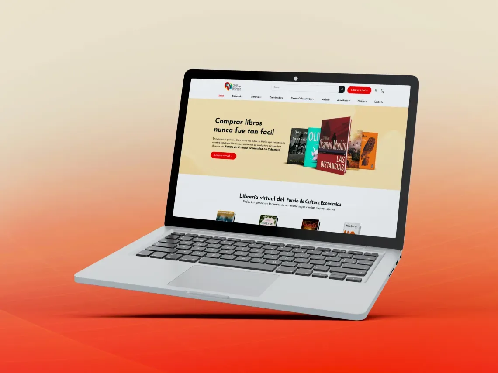
Acerca del proyecto
Transformación del sitio del Fondo de Cultura Económica en Colombia: de un sitio estático a un e-commerce moderno que respeta su legado editorial.
• Cliente: Fondo de Cultura Económica, una de las editoriales más importantes de Iberoamérica
• Rol: Diseñador UX/UI · Arquitectura de información y diseño visual
• Reto: Un catálogo de miles de títulos con saturación visual, navegación confusa y una estética que no reflejaba el prestigio de la marca.
• Decisión clave: Priorizar los espacios en blanco y dar protagonismo a las portadas, frente a la sobrecarga visual común en el sector.
• Entregable: Arquitectura del catálogo, UI kit y prototipo de alta fidelidad en Figma.
Paso 1: El punto de partida (sitio web anterior)
Para entender el problema, analicé la plataforma anterior. Identifiqué que la saturación visual y una arquitectura confusa estaban alejando a los lectores potenciales. Falta de jerarquía en las fichas de libros, navegación poco intuitiva y una estética que no representaba el prestigio de la marca.
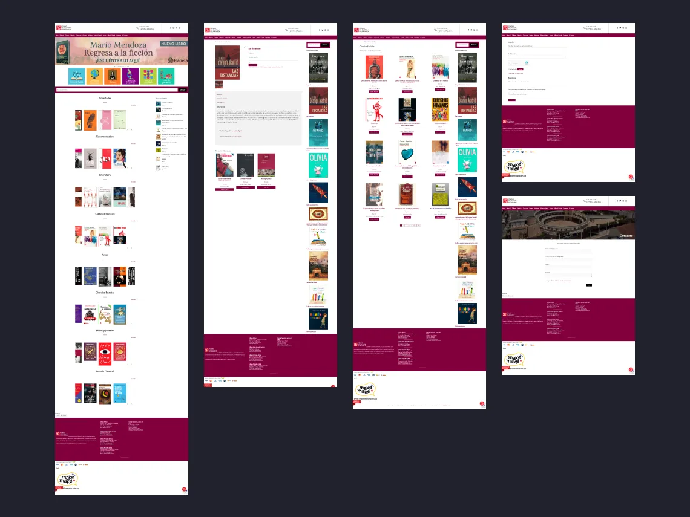
Paso 2: Investigación y estrategia (benchmark)
Analicé las mejores prácticas de librerías y competidores locales para definir un nuevo estándar.
Insight: La mayoría de los sitios del sector abruman al usuario con exceso de elementos visuales y poca jerarquía.
Decisión: Opté por un diseño con espacios en blanco generosos, permitiendo que las portadas de los libros fueran las protagonistas y de esa manera facilitar la toma de decisiones de los usuarios.
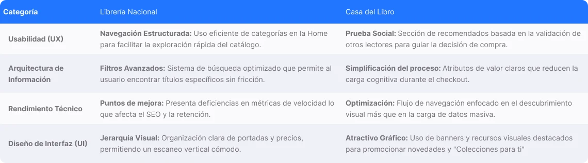
Paso 3: Entendiendo al usuario (user persona)
Para que el diseño no fuera solo estético, definí un User Persona basado en el público objetivo de la librería (académicos, estudiantes y lectores).
Perfil: El "Lector Investigador", alguien que busca títulos específicos y valora la rapidez, pero también la información detallada del autor y la editorial.
Necesidad: Encontrar libros difíciles de conseguir de forma rápida y con un proceso de compra sin distracciones. Esta definición guió todas las decisiones de usabilidad posteriores.
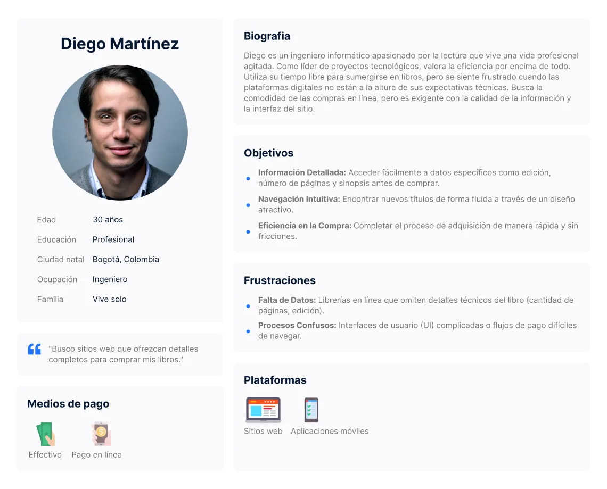
Paso 4: Flujo y navegación (sitemap & wireframes)
Con el perfil de usuario claro, tracé un Sitemap que organiza miles de títulos en categorías accesibles para evitar que el lector se pierda.
• Wireframes: Desarrollé esquemas de baja fidelidad para validar la lógica de navegación y el proceso de compra.
• Iteración: Esta fase fue clave para reducir la cantidad de clics necesarios para llegar al carrito de compras, simplificando la experiencia del usuario.
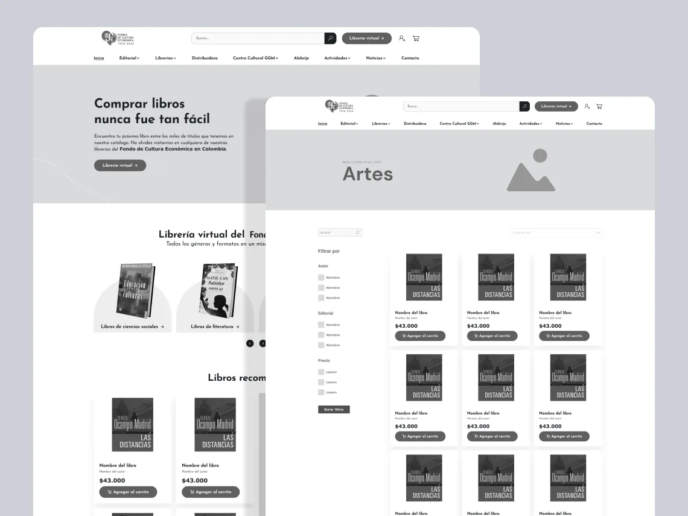
Paso 5: Creación de un UI kit
Para garantizar escalabilidad y consistencia, construí un sistema de componentes sólido que facilita la transición del diseño al desarrollo:
• Tipografía: Fuentes seleccionadas específicamente para una lectura cómoda y jerarquizada en descripciones extensas de libros.
• Componentes reutilizables: Diseñé botones, cards y menús que permitieron una implementación mucho más rápida y coherente en todas las vistas de la plataforma.
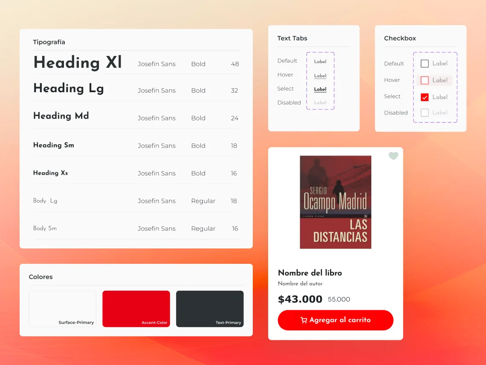
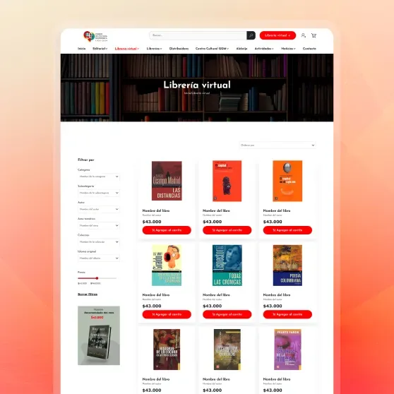
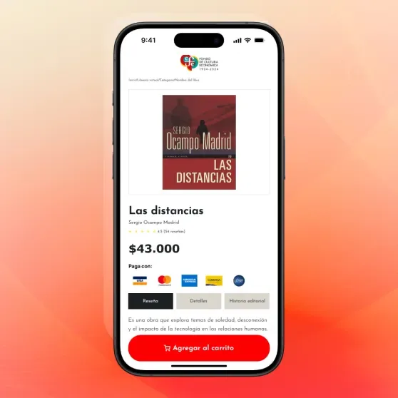
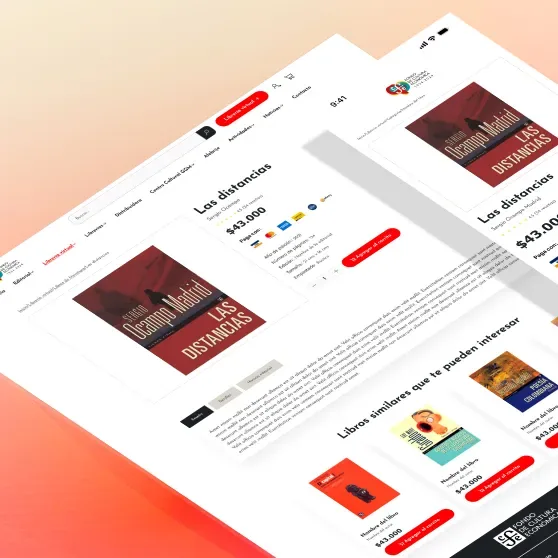
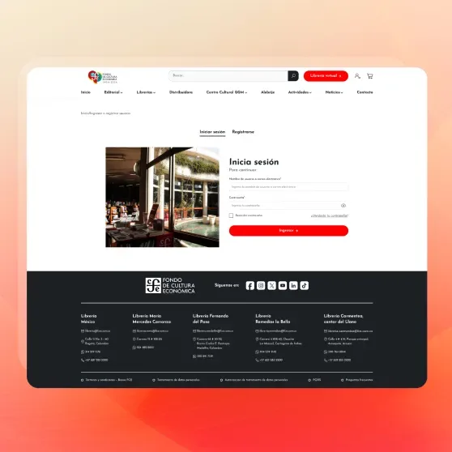
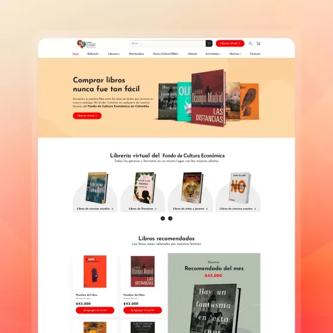
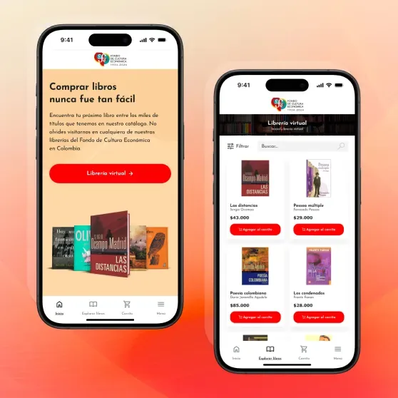
Paso 6: Prototipo de alta fidelidad
El rediseño convirtió un catálogo de miles de títulos en una experiencia de navegación clara. Cada decisión — desde el espaciado hasta la jerarquía tipográfica — fue tomada pensando en un solo objetivo: que el lector encontrara su libro y quisiera comprarlo.
• Enfoque visual: Una paleta sobria y profesional combinada con una interfaz limpia que facilita una navegación fluida para el lector.
• Valor técnico: El diseño se estructuró pensando en rendimiento y posicionamiento SEO, para que el sitio final fuera rápido, escalable y visible en Google.
Impacto: una librería digital a la altura de su legado
El Fondo de Cultura Económica pasó de un sitio estático a una experiencia de compra que conecta su prestigio editorial con el lector de hoy:
• Menos pasos hacia la compra: La nueva arquitectura y la iteración de wireframes acortan el camino entre buscar un título y llegar al carrito.
• Un legado que se siente actual: La marca se moderniza sin perder la seriedad institucional que la distingue frente a otras librerías.
• Listo para crecer: El UI kit permite sumar colecciones, autores o campañas sin rediseñar, manteniendo la coherencia en miles de fichas de libros.
Trabajo realizado para AMD Agencia de Marketing Digital